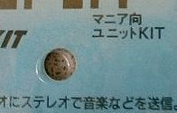

|
FMステレオ・トランスミッタの製作
 FMステレオ・トランスミッタとは FMステレオ・トランスミッタとは
|
FMステレオ・トランスミッタとは音声の信号をFMラジオで送信する機械です。
我が家のラジカセには入力端子がついていないので、パソコンから直接録音ができません。そこで、FMステレオ・トランスミッタを製作しました。
しかし、現在はCD-Rドライブを持っているので、この問題は解決しました。
今はもっぱら高音質のスピーカーを利用するのに使っています。
ほかの使用法としてテレビにつないでポータブルFMラジオで受信しトイレで聞いたり、
ラジカセ等につないで防滴ラジオで受信して風呂場で聞くなど、が考えられます。
FMステレオ・トランスミッタは結構高いですが、組み立てキットだと1,000円くらいのものもあるようです。
今回は簡単に組み立てられる、イーケイジャパンの
PS474Rを購入しました。
近年のポータブル・デジタルオーディオプレーヤーの流行で、FMステレオ・トランスミッタの値段も、サイズも変わってきていますので注意してください。

購入するときふと目にとまったのは、パッケージの「マニア向」
という文字です。
これを買ったらあなたもマニアの仲間入りですね（笑）。

イーケイジャパンは、回路基板と部品だけをセットしたものを「マニア向け」として販売しているそうです（後日判明）。
キットは近くの無線専門店で購入しました。インターネットでの通販も利用することができるので近くに販売店がない人も購入できます。
乾電池ボックス、スイッチなどは付属していませんので、別途購入する必要があります。店の人と相談するとよいでしょう。
ケースはなくても動作はしますが、むき出しだと見栄えも悪いですし、水やほこりを避けるという点からいってもよくありません。
私は100円ショップでちょうどいい箱を見つけたのでそれを使っています。木製なので加工が簡単でした。二重底にして絶縁にも気を配ったつもりです。
工作用品店では、ケースと電池ボックスが一体になったものが販売されているようです。それを利用するのも手でしょう。
|
組み立て
|
組み立ては添付の説明書に従っていけばよいので、大変簡単です。途中でわからなくなっても、パッケージの完成写真や、説明書の図を参考にすればよいので、誰でも完成できるでしょう。
ひとつアドバイスとして、作業中に抵抗の色を見分けるのは面倒くさいので、説明書の表の横にテープで貼り付けるなど、作業前にどれが何オームかすぐにわかるようにしておくのがよいと思います。
|
製作例
|
私が組み立てたPS-474Rの写真です（ピントが合っていません）。
|
使用した感想
|
音質は思っていたよりも高く、一般用途にはこれで十分だと思います。
ひとつだけ不満を言うとすると、電源がONなのかOFFなのか一目で確認することができないことです。（もちろんスイッチを見ればわかるのですが）
電池一本で動作するので、手持ちのLEDを動作させるのには電圧が足りません。かといってもう一本つなぐのも本末転倒な感じがします。
普通の豆電球を使う方法も試してみましたが、直列にすると豆電球がほとんど光らず、並列ではキットが動かないという困った状態です。最近は豆電球型のLEDが安く売られているそうですが、そこまでするのはどうも、ということで結局そのまま使っています。
|
ご注意
|
- キットに関しての情報は、購入時点におけるものです。変更になっている場合があります。
- 製作（および改造）は各自の責任で行ってください。
- 音楽等の複製は著作権の範囲内で行ってください。
|
このページの最終更新 07/2/28
|